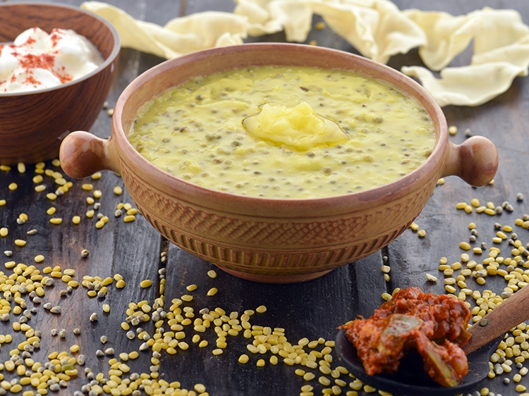

🍲 Rajasthani Khichdi Recipe

Ingredients
- 1/2 cup rice
- 1/2 cup yellow moong dal
- 2 tbsp ghee
- 1 tsp cumin seeds
- 1/4 tsp asafoetida (hing)
- 1/2 tsp turmeric powder
- 1/2 tsp red chili powder
- Salt to taste
- 4 cups water
Instructions
- Wash rice and dal together and soak for 15–20 minutes.
- Heat ghee in a pressure cooker. Add cumin seeds and hing.
- Add soaked dal and rice, sauté for 2 minutes.
- Add turmeric, red chili powder, salt, and water.
- Close lid and pressure cook for 3–4 whistles.
- Let pressure release naturally, then stir and serve hot.
Serve With
- Curd or buttermilk
- Pickle and papad
🍛 Tip: Add a dollop of ghee on top for rich flavor and aroma!